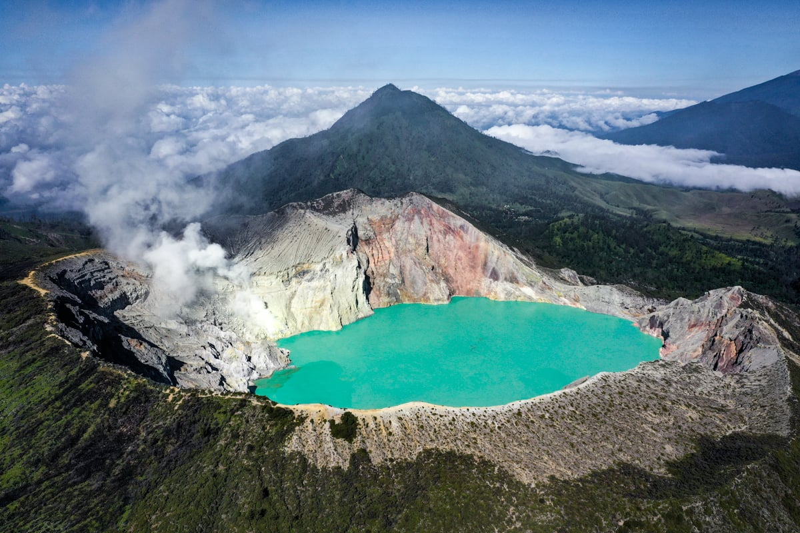
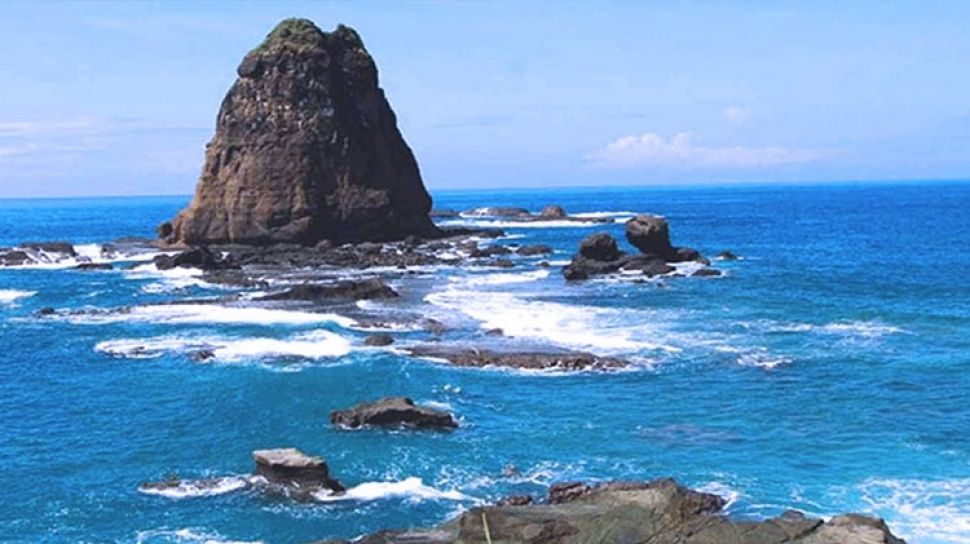
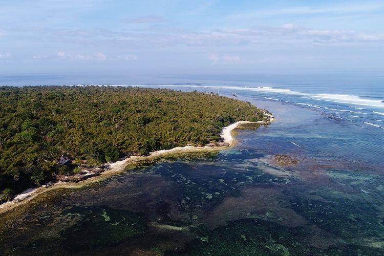
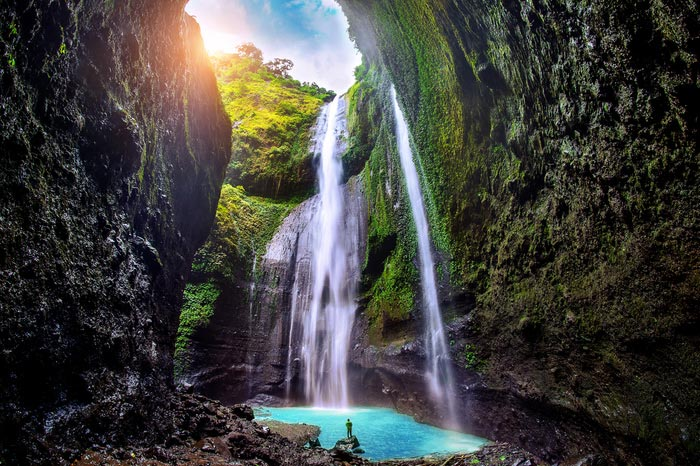
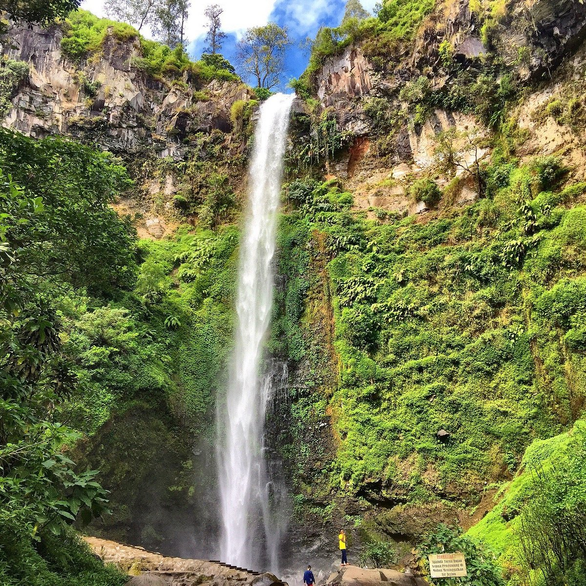
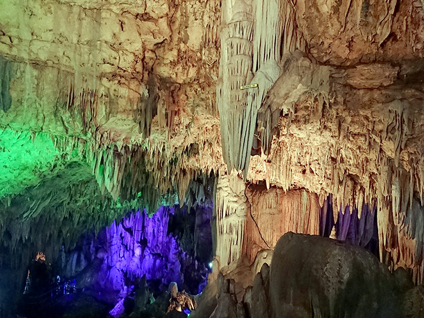
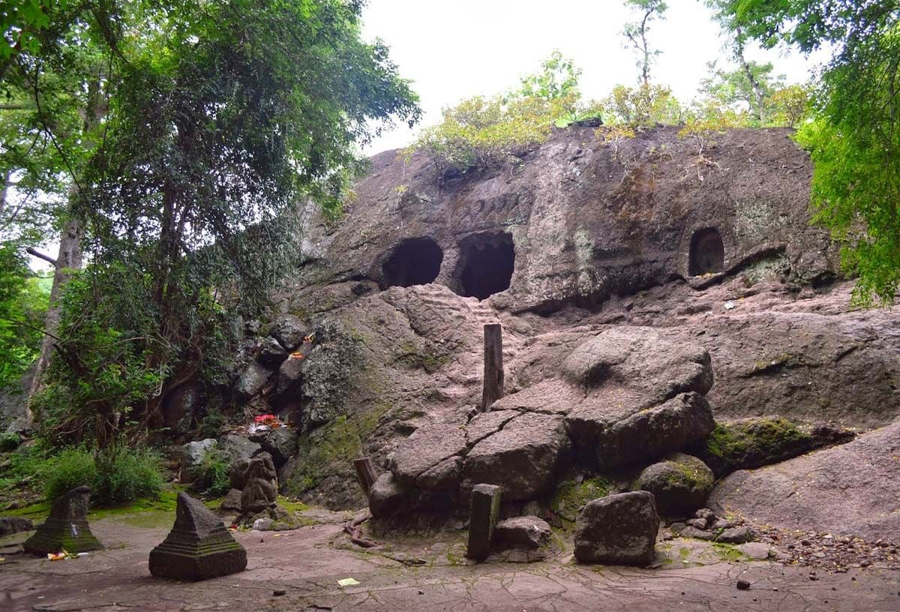

| NO |
FOTO |
OBYEK WISATA |
DESKRIPSI |
| 1. |
 |
Gunung Bromo |
Sebagai sebuah objek wisata, Bromo menjadi menarik karena statusnya sebagai gunung berapi yang masih aktif. Gunung Bromo termasuk dalam kawasan Taman Nasional Bromo Tengger Semeru. Ada beberapa destinasi wisata di Bromo yang menjadi tujuan utama wisatawan ke Bromo. Antara lain Penanjakan 1, Bukit Kingkong, Bukit Cinta Bromo, Seruni Point, Lembah Widodaren, Kawah Bromo, Gunung Batok, Pura Luhur Poten, Pasir Berbisik, Jembatan Gantung Kaca Bromo. |
| Kabupaten Probolinggo, Pasuruan, Lumajang, dan Kabupaten Malang |
2. |
 |
Kawah Ijen |
Kawah Ijen adalah sebuah danau kawah yang bersifat asam yang berada di puncak Gunung Ijen dengan kedalaman danau 200 meter dan luas kawah mencapai 5.466 Hektar. Danau kawah Ijen dikenal merupakan danau air asam kuat terbesar di dunia. Kawah Ijen berada dalam wilayah Cagar Alam Taman Wisata Ijen. Fenomena eternal blue fire atau api biru abadi berada di dalam kawah Ijen, dan pemandangan alami ini hanya terjadi di dua tempat di dunia yaitu Etiopia (gunung Dallol) dan Ijen. Blue fire hanya dapat dilihat oleh mata manusia saat tidak ada cahaya, karenanya waktu ideal untuk melihatnya adalah jam 2 hingga jam 4 dini hari, karena pendakian Gunung Ijen baru mulai dibuka jam 2 dini hari. Dari Kawah Ijen, kita dapat melihat pemandangan gunung lain yang ada di kompleks Pegunungan Ijen, di antaranya adalah puncak Gunung Marapi yang berada di timur Kawah Ijen, Gunung Raung, Gunung Suket, dan Gunung Rante. |
| Kabupaten Bondowoso dan Kabupaten Banyuwangi, Jawa Timur |
| 3. |
 |
Pantai Klayar |
Pantai Klayar adalah sebuah pantai dengan pasir putih dan batu karang serta tebing-tebing batu yang mengelilingi. Pantai ini masih segaris dengan Pantai Teleng Ria yang sudah dikelola sebagai tempat wisata terlebih dahulu. Pantai Klayar memiliki air laut yang biru dan ombak yang sangat besar, sehingga pengunjung tidak diperbolehkan untuk berenang. Bibir pantai dihiasi tumbuhan pohon kelapa dan gubug-gubug/lincak-lincak yang beratap daun kering, karang-karang di wilayah pasang surut juga masih terawat dengan alami. Wisatawan juga bisa menyusuri karang-karang untuk menemukan kerang-kerangan Moluska, dan bintang laut Echinodermata. Di samping itu juga di sepanjang batuan juga terdapat limpet dan rumput laut yang tumbuh disekitar bebatuan. Wisatawan bisa melihat langsung masyarakat setempat memanjat pohon kelapa guna diambil air deresan (bahan baku untuk pembuatan gula jawa) atau hanya untuk disuguhkan langsung kepada wisatawan sambil menikmati eksotisme alam Pantai Klayar. |
| Desa Sendang, Kecamatan Donorojo, Kabupaten Pacitan, Provinsi Jawa Timur |
4. |
 |
Pantai Papuma |
Pantai Papuma adalah sebuah pantai yang menjadi tempat wisata. Nama Papuma sendiri sebenarnya adalah sebuah singkatan dari “Pasir Putih Malikan. Keindahan pasir putih Malikan ini cukup eksotis dan mampu menarik perhatian wisatawan lokal hingga mancanegara untuk datang kesana. Menurut sejarah, dulu pada zaman penjajahan Jepang hutan yang ada di sekitar pantai Papuma ini dijadikan sebagai markas dan benteng Jepang ketika perang. Pantai Papuma mulai dibuka secara resmi sejak tahun 1994, namun pada tahun 1998 wisata pantai di Jember yang ini baru mulai ramai dikunjungi oleh wisatawan. |
| Desa Lojejer, Kecamatan Wuluhan, Kabupaten Jember, Indonesia |
5. |
 |
Pantai Plengkung |
Pantai Plengkung, atau lebih dikenal dengan nama G-Land. Plengkung dapat dicapai selama setengah hari perjalanan darat dari Bali. Pantai Plengkung juga bisa dicapai dengan boat sewaan dari Bali. Pantai Plengkung juga terletak di sisi timur Teluk Grajagan, maka dari itu sisi kanan Pantai Plengkung memiliki ombak lebih dominan. Ombak Panjang Plengkung berbentuk memanjang, tinggi, dan berkecepatan tinggi. Ombak Pantai Plengkung juga membentuk tabung ombak hampir sempurna sehingga menjadi favorit para penggila olahraga surfing. |
| Kawasan Taman Nasional Alas Purwo, Kabupaten Banyuwangi, Jawa Timur |
6. |
 |
Air Terjun Madakaripura |
Air terjun Madakaripura setinggi 200 meter ini merupakan air terjun tertinggi di Pulau Jawa dan tertinggi kedua di Indonesia. Air terjun ini adalah salah satu air terjun di kawasan Taman Nasional Bromo Tengger Semeru tepatnya di lereng Gunung Bromo. Nama air terjun yang berada di ketinggian 1.000 Mdpl ini berasal dari kata Madakaripura, tanah perdikan milik mahapatih Gajah Mada dari kerajaan Majapahit. Air Terjun Madakaripura juga kerap disebut Air Terjun Abadi. Hal itu karena air yang dialirkan oleh air terjun ini selalu melimpah dan tak pernah berkurang debitnya. Wisatawan akan ditawari memakai jasa guide lokal yang juga bisa membawakan tas carrier pengunjung bila diperlukan, mengingat jalur yang akan dilalui dan bahaya akan bebatuan atau batang pohon yang terkadang bisa saja jatuh dari atas Lembah. |
| Kabupaten Probolinggo, Provinsi Jawa Timur. |
7. |
 |
Air Terjun Coban Rondo |
Air terjun ini mudah dijangkau oleh kendaraan umum. Akses yang paling mudah dengan melalui jalan raya dari Malang ke Batu, dari sebelah timur atau dari Kediri ke Pare menuju Malang dari arah barat. Coban Rondo terletak pada ketinggian 1135 m di atas permukaan laut. Air terjun ini memiliki ketinggian 84 meter dengan debit air berkisar antara 90 liter per detik pada musim kemarau, sampai dengan 150 liter per detik pada musim penghujan. |
| Kecamatan Pujon, Kabupaten Malang, Jawa Timur. |
| 8. |
 |
Air Terjun Sedudo |
Air Terjun Sedudo berada pada ketinggian 1.438 meter dpl, ketinggian air terjun ini sekitar 105 meter. Tempat wisata ini memiliki fasilitas yang cukup baik, dan jalur transportasi yang mudah diakses. Setiap Tahun Baru Jawa, air terjun Sedudo dipergunakan untuk upacara ritual, yaitu memandikan arca dalam upacara Parna Prahista, yang kemudian sisa airnya dipercikan untuk keluarga agar mendapat berkah keselamatan dan awet muda. Hingga sekarang pihak Pemkab Nganjuk secara rutin melaksanakan acara ritual Mandi Sedudo setiap tanggal 1 Suro. Tradisi yang tak kalah penting yaitu adalah Jamasan Pusaka, di mana biasanya dilakukan di kantor Desa Ngliman. Jamasan Pusaka dilaksanakan dengan mencuci pusaka-pusaka seperti keris, tombak dan pusaka-pusaka peninggalan Kerajaan Majapahit lainnya. |
| Desa Ngliman Kecamatan Sawahan, Kabupaten Nganjuk, Jawa Timur |
9. |
 |
Goa Gong |
Kabupaten Pacitan juga terkenal dengan julukan kota 1001 gua, dan satu yang terkenal disini adalah tempat wisata Goa Gong Pacitan. Menurut cerita dari warga sekitar, Goa Gong ditemukan sekitar tahun 1930an. Akibat musim kemarau berkepanjangan, yang dimana Pacitan mengalami kekeringan dan sangat sulit untuk memperoleh air. Nama Goa Gong sendiri diambil dari Suara yang terdengar menyerupai bunyi gong tersebut dihasilkan dari tetesan air yang menimpa Stalaktit atau stalakmit di gua tersebut, ditambah dengan gema yang dipantulkan oleh formasi batuan di dalam gua sebenarnya bunyi yang dihasilkan cukup apik untuk dinikmati. Ada juga yang mengatakan bahwa di salah satu ruangan gua terdapat batu yang apabila ditabuh akan mengeluarkan bunyi yang menggema seperti bunyi gong. |
| Jl. Salam, Bomo, Punung, Kabupaten Pacitan, Jawa Timur |
10. |
 |
Goa Selomangleng |
Dinamakan Selomangleng dikarenakan lokasinya yang berada di lereng bukit (bahasa Jawa: Selo = batu, Mangleng = miring), kira-kira 40 meter dari tanah terendah di kawasan. Gua ini terbentuk dari batu andesit hitam yang berukuran cukup besar, sehingga tampak cukup menyolok dari kejauhan. Terlepas dari gelap dan pengapnya suasana dalam gua, objek wisata Gua Selomangleng patut dikunjungi saat anda berada di Kediri. Tak jauh dari lokasi gua ini juga terdapat museum Airlangga yang merupakan museum purbakala yang bisa dikunjungi dan banyak sekali menyimpan benda-benda arkeologi berupa patung/arca. Dan sekarang, Goa Selomangleng diberi fasilitas lain seperti kolam renang dengan aneka wahananya dan juga arena bermain anak. Selain mengunjungi goa pengunjung juga dapat "sedikit" olahraga dengan naik ke Gunung Maskumambang yang hijau dan asri serta banyak terdapat ayam hutan yang berada di samping Museum Airlangga. Untuk naik gunung, pengunjung tidak berlu bersusah - susah karena telah dibangun tangga untuk naik ke atas. |
| Kotamadya Kediri, Provinsi Jawa Timur |